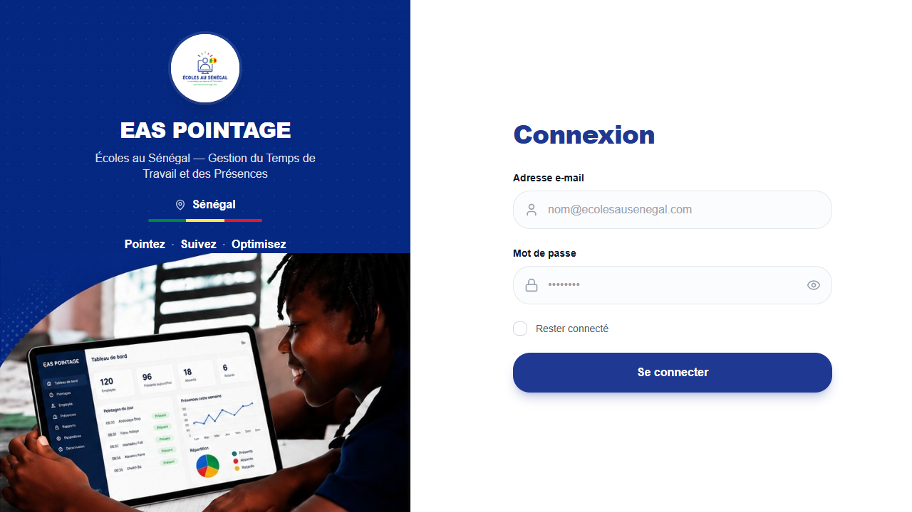

Application TEWNA — Écoles au Sénégal
Développement de Tewna, application web & PWA de gestion du temps de travail et de présence multi-rôles pour l'organisation Écoles au Sénégal. Conception de l'interface en React, Clean Architecture modulaire, tokens d'authentification Sanctum et dashboard de supervision.